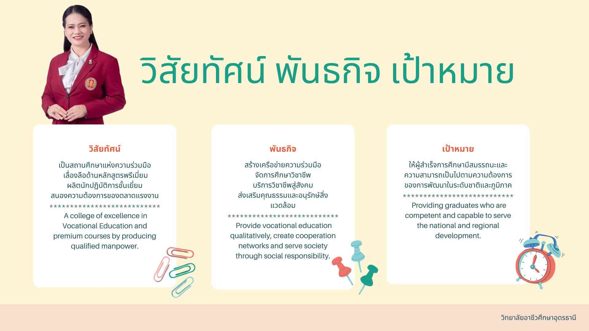

ข้อมูลทั่วไปของโรงเรียน
โรงเรียนของเราก่อตั้งขึ้นเพื่อให้การศึกษาที่มีคุณภาพและสร้างอนาคตที่สดใสให้กับนักเรียน
วิทยาลัยอาชีวศึกษาอุดรธานี (UDVC) ก่อตั้งขึ้นเมื่อวันที่ 7 กรกฎาคม พ.ศ. 2481 โดยเริ่มต้นจากโรงเรียนช่างทอผ้า ณ บ้านพักอุปราชและสมุหเทศาภิบาล สำเร็จราชการมลฑลอุดรในรัชกาลที่ 7 ในปี พ.ศ. 2491 ได้เปลี่ยนชื่อเป็นโรงเรียนการช่างสตรีอุดรธานี และในปี พ.ศ. 2519 ได้ยกฐานะเป็นวิทยาลัยอาชีวศึกษาอุดรธานี วิทยาลัยตั้งอยู่ที่เลขที่ 8 ถนนโพศรี ตำบลหมากแข้ง อำเภอเมือง จังหวัดอุดรธานี รหัสไปรษณีย์ 41000 วิทยาลัยมีหลักสูตรการเรียนการสอนที่หลากหลาย ทั้งระดับประกาศนียบัตรวิชาชีพ (ปวช.) และประกาศนียบัตรวิชาชีพชั้นสูง (ปวส.) ในสาขาต่าง ๆ เช่น การบัญชี การตลาด คอมพิวเตอร์ธุรกิจ การออกแบบ การโรงแรม และเทคโนโลยีสารสนเทศ วิทยาลัยอาชีวศึกษาอุดรธานี มีวิสัยทัศน์ในการพัฒนาทักษะและความรู้ของนักเรียน นักศึกษา เพื่อเตรียมความพร้อมสู่การทำงานและการศึกษาต่อในระดับที่สูงขึ้น
